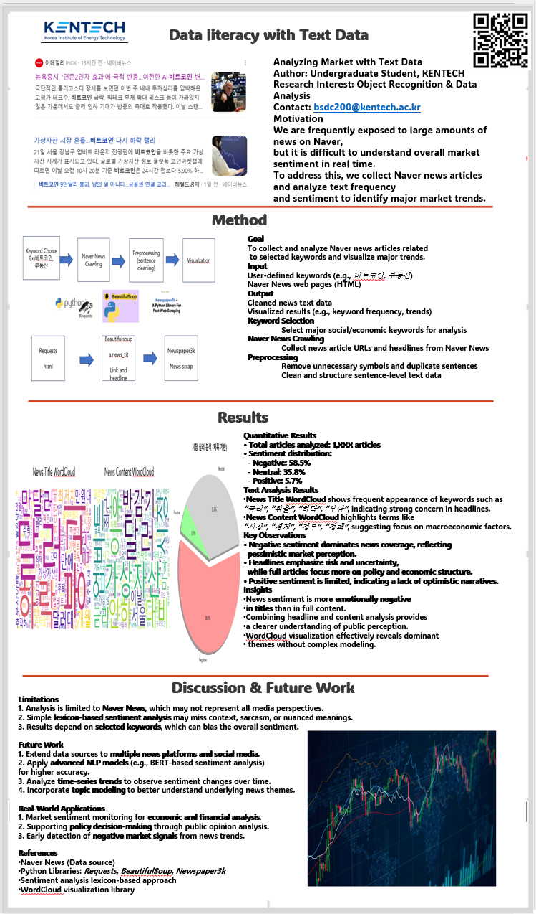

Text Data
Naver News
Crawling
Sentiment
Visualization
Analyzing Market with Text Data (Naver News)
Motivation
- Large volumes of news make it hard to grasp market sentiment in real time.
- Goal: summarize trends via word frequency and sentiment.
Method
- Crawl Naver news with Requests, BeautifulSoup, Newspaper3k
- Clean sentences and compute frequency + sentiment
- Visualize with word clouds and sentiment distribution
Results
- Title vs content word clouds reveal different dominant themes
- Sentiment distribution highlights overall market mood
- Visual summaries reduce long-text overload
Impact
- Market sentiment monitoring
- Policy / decision support signals
- Early detection of negative trends

Poster: Text-based market trend analysis using Naver News crawling.